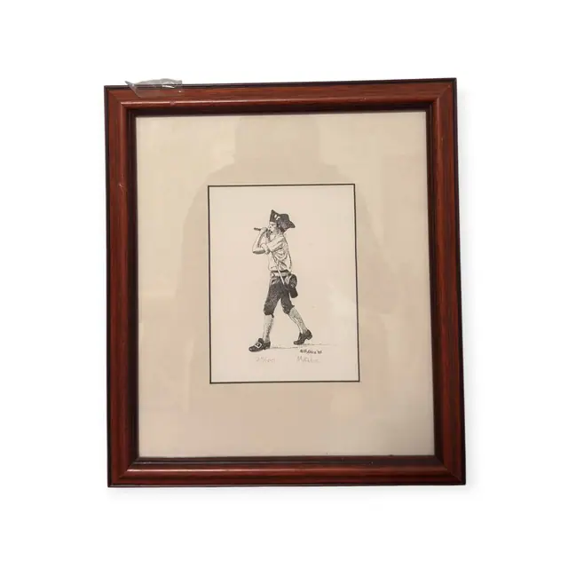
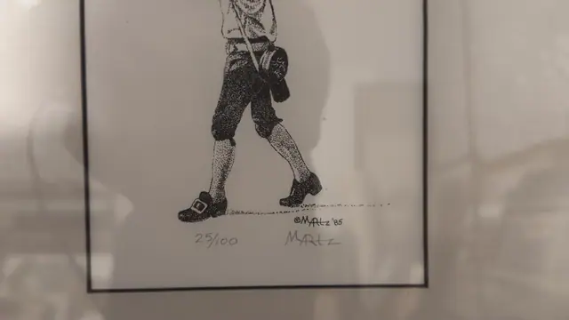
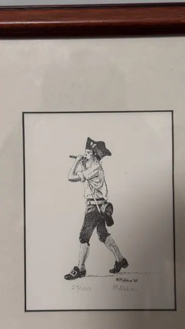

Paintings & Prints
Colonial Fifer Stipple Print, Numbered 25/100, MAltz, Numbered Edition, Framed, 1985
MAltz · 1985 (dated in the image)
Price Upon Request



About the Item
MAltz. A small black-and-white figure study built entirely from stipple dots, showing a boy or young soldier in a tricorn hat, full-sleeved shirt, breeches, stockings and buckled shoes, marching to the right while playing a fife. A haversack swings at his hip and a light dotted shadow trails behind his feet, the only ground indicated. The image sits on white paper with a ruled black border, hand numbered '25/100' at lower left and signed in pencil at lower right. It is presented in a wide cream mat with a fine black line and a moulded dark cherry-red timber frame under glass. Medium: limited-edition print after a pen-and-ink stipple drawing (offset or photo-lithograph). Signed in pencil below the image at lower right, plus a copyright line inside the image, reading "MAltz". Edition: 25/100 (hand numbered in pencil). Inscribed on the reverse or mount: 25/100; ©MAltz '85. Condition: Print and mat look clean; heavy reflections on the glass in every shot, and a small tag or sticker is caught under the glass at the upper left in IMG_8905/8909.
Details
- Creator:
- MAltz
- Creation Year:
- 1985 (dated in the image)
- Dimensions:
- Height: 13.0 in (33.02 cm)
Width: 11.0 in (27.94 cm)
outside of frame - Medium:
- limited-edition print after a pen-and-ink stipple drawing (offset or photo-lithograph)
- Edition:
- 25/100 (hand numbered in pencil)
- Period:
- 20Th
- Condition:
- Offered in the condition shown in the photographs.
- Reference Number:
- VO-143
- Documentation:
- no certificate photographed
- Gallery Location:
- 25/100; ©MAltz '85